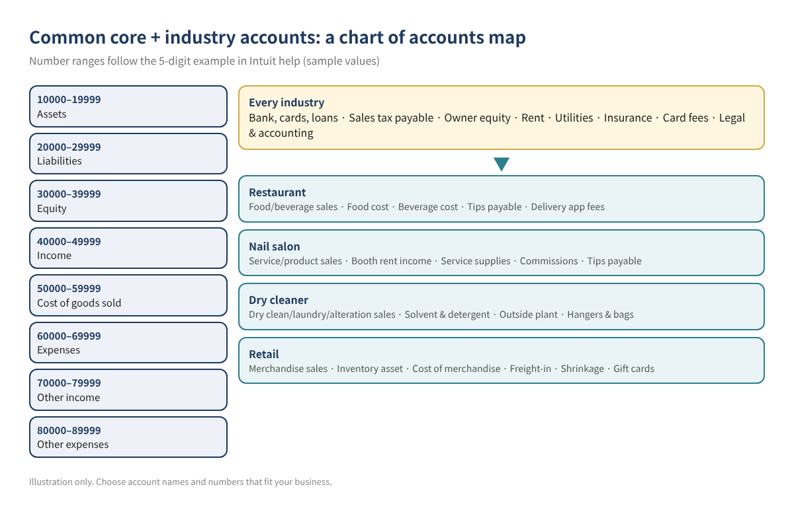
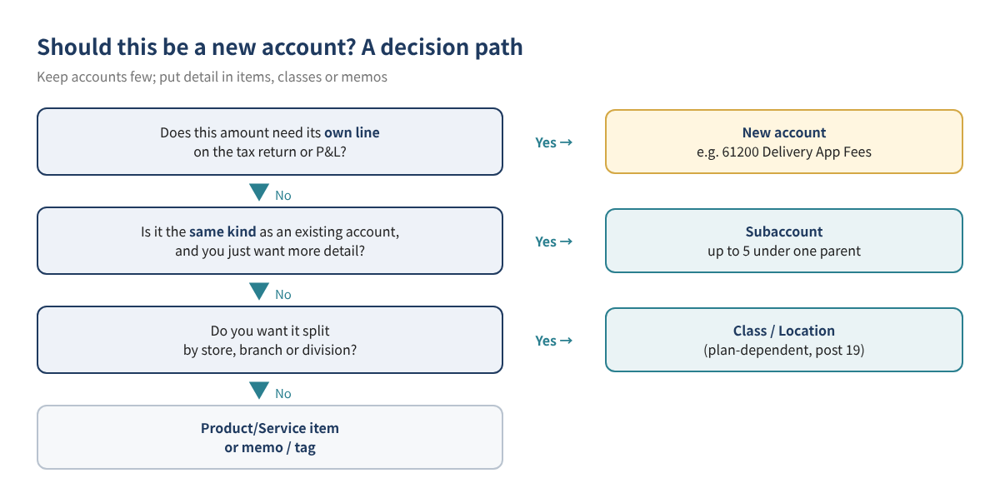
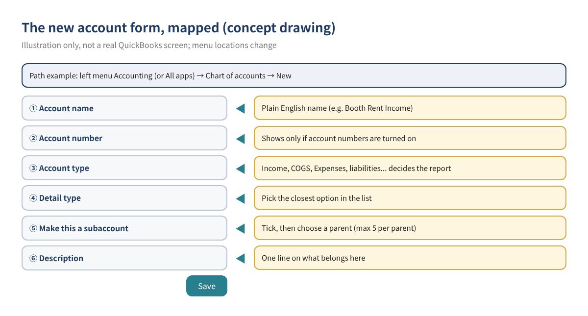
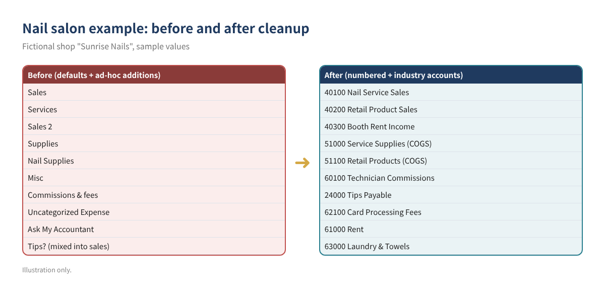

The chart of accounts QuickBooks Online (QBO) creates for a new company is a general-purpose list meant to fit everyone. Used as is, it tends to pour all revenue into one "Sales" line, lets card tips and sales tax look like income, and mixes the cost of what you sell with ordinary office supplies. A few months in, the profit and loss report can't answer the most basic question an owner has: what does it cost me to make a dollar of sales?
This is post 2 of the QBO beginner series. Post 1 (opening balances and chart of accounts setup) covered cleanup principles and numbering. This post gives ready-to-adapt account lists for four common small businesses (restaurants, nail salons, dry cleaners and retail stores), shows how each account lines up with Schedule C, and walks through putting them into QBO.
Who this is for: owners and bookkeepers of restaurants and cafés, nail salons, dry cleaners and retail shops who use QBO; anyone whose default chart has grown "Misc" and "Sales 2" accounts; and anyone who wants a P&L their tax preparer can use without reclassifying everything.
Accounts are buckets. If the buckets don't match how your business makes and spends money, the reports can't answer the questions you ask every month. Before adding anything, make sure your chart can answer these three:
Intuit's help explains that the account type decides whether an account appears on the balance sheet or the profit and loss, while detail types don't change the accounting behavior; if nothing fits exactly, choose the closest option (Account type and detail types). In short: choose the type carefully, the detail type sensibly.

Most shops need the accounts below regardless of industry. The numbers follow the five-digit example ranges in Intuit's help (10000s assets, 20000s liabilities, 30000s equity, 40000s income, 50000s cost of goods sold, 60000s expenses, 70000s other income, 80000s other expenses) (Use account numbers). Intuit presents these as a suggestion, not a requirement.
| Number and name (sample values) | Account type | Note |
|---|---|---|
| 10100 Business Checking | Bank | Operating account |
| 12000 Card Clearing | Asset | Holds card sales until the processor deposits them |
| 20100 Business Credit Card | Credit Card | Business card |
| 22000 Sales Tax Payable | Liability | QBO may create one named after your tax agency when sales tax is set up |
| 30000 Owner's Equity / Owner's Draw | Equity | Owner contributions and draws (post 12) |
| 61000 Rent | Expenses | Store rent |
| 62100 Card Processing Fees | Expenses | Merchant fees |
| 64000 Utilities | Expenses | Power, gas, water, internet |
| 65000 Insurance | Expenses | Business insurance (not health) |
| 66000 Legal & Professional Fees | Expenses | Accounting and legal |
Table 1. Common accounts. Sample values.
Tip: QBO keeps system accounts such as Undeposited Funds, Opening Balance Equity, Retained Earnings and Sales of Product Income. Intuit says these can't be made inactive, and some are recreated if renamed or deleted (Manage default and special accounts). Leave them alone and add your industry accounts around them.
Food and beverages carry different cost percentages, so pair each income account with its own cost account. Card tips belong to staff, so they go to a liability. The IRS says employees who receive $20 or more in tips in a month must report them to the employer by the 10th of the following month, and that charged tips the employer pays out count (IRS Topic no. 761). The daily close is a separate topic; this section is only about the account structure.
| Number and name (sample values) | Type | Why |
|---|---|---|
| 40100 Food Sales | Income | Food revenue |
| 40200 Beverage Sales | Income | Drinks and alcohol, different margin |
| 40900 Discounts & Comps | Income (contra) | Keeps giveaways visible |
| 51000 Food Cost | Cost of Goods Sold | Ingredients |
| 51100 Beverage Cost | Cost of Goods Sold | Drink cost |
| 51500 Packaging & To-Go Supplies | Cost of Goods Sold | Containers (or an expense, your choice) |
| 24000 Tips Payable | Liability | Card tips owed to staff |
| 61200 Delivery App Fees | Expenses | See what delivery apps cost |
Table 2. Restaurant accounts. Sample values.
Service revenue, retail product sales and booth rent (if you rent stations) behave differently, so keep them apart. Track technician commissions separately to see labor as a share of service sales.
| Number and name (sample values) | Type | Why |
|---|---|---|
| 40100 Nail Service Sales | Income | Manicures, pedicures, gel |
| 40200 Retail Product Sales | Income | Polish, lotion |
| 40300 Booth Rent Income | Income | Station rent (confirm tax reporting with your preparer) |
| 51000 Service Supplies | Cost of Goods Sold | Gel, acrylic, files |
| 51100 Retail Products | Cost of Goods Sold | Products bought for resale |
| 24000 Tips Payable | Liability | Card tips owed to technicians |
| 60100 Technician Commissions | Expenses | Commissions to contractors (employees go through payroll) |
| 63000 Laundry & Towels | Expenses | Towel service, disposables |
Table 3. Nail salon accounts. Sample values.
Watch out: whether a technician is an employee or an independent contractor depends on the actual relationship, not on an account name. The IRS says a worker is not a contractor if the payer can control what will be done and how, and that the answer depends on the facts (Independent contractor defined). Employee commissions are wages; payroll recording is post 14.
Split dry cleaning, laundry and alterations, and separate wholesale plant charges from solvent and from hangers and bags. That shows which service actually earns money. The numbering matches the dry cleaner example in post 1.
| Number and name (sample values) | Type | Why |
|---|---|---|
| 40100 Dry Cleaning Sales | Income | Dry cleaning |
| 40200 Laundry Sales | Income | Wash and shirts |
| 40300 Alteration Sales | Income | Tailoring |
| 51000 Cleaning Solvent & Detergent | Cost of Goods Sold | Solvent, detergent |
| 51200 Outside Cleaning (Wholesale Plant) | Cost of Goods Sold | Work sent out |
| 51300 Hangers, Bags & Tags | Cost of Goods Sold | Packaging |
| 23000 Customer Prepayments | Liability | Paid at drop-off (accrual books) |
| 62300 Equipment Repairs | Expenses | Machine repairs |
Table 4. Dry cleaner accounts. Sample values.
Retail runs on inventory: purchases go to an inventory asset and move to cost of goods when sold. Tracking freight-in and shrinkage (loss and damage) separately keeps margins honest. Gift cards are a liability when sold, not revenue. Whether your QBO plan includes inventory tracking depends on the plan, so check Intuit's current plan information (post 20 covers inventory).
| Number and name (sample values) | Type | Why |
|---|---|---|
| 13000 Inventory Asset | Asset | Goods not yet sold |
| 40100 Merchandise Sales | Income | Product revenue |
| 40900 Sales Returns & Allowances | Income (contra) | Returns and markdowns |
| 50100 Cost of Merchandise Sold | Cost of Goods Sold | Cost of items sold |
| 50200 Freight-In | Cost of Goods Sold | Inbound shipping |
| 50300 Inventory Shrinkage | Cost of Goods Sold | Count adjustments |
| 25000 Gift Card Liability | Liability | Sold, not yet redeemed |
| 67000 Advertising | Expenses | Marketing |
Table 5. Retail accounts. Sample values.
Sole proprietors, including most single-member LLCs, generally report business income on Schedule C (Form 1040). The 2025 form has line 1 Gross receipts or sales, expense lines 8 through 27b in Part II, and cost of goods sold in Part III (lines 35 to 42) (2025 Schedule C). Noting each account's line when you create it saves reclassification at year end. Partnerships and S corporations file different returns, so treat this as a reference only.
| QBO account (sample) | 2025 Schedule C line (form wording) | Note |
|---|---|---|
| Industry income accounts | Line 1 Gross receipts or sales | Excludes tips payable and sales tax |
| 40900 Discounts / Returns | Line 2 Returns and allowances | |
| 51000 Food, service supplies, etc. | Part III line 36 Purchases or 38 Materials and supplies | Depends on inventory/cost method |
| 67000 Advertising | Line 8 Advertising | |
| 60100 Technician Commissions | Line 10 Commissions and fees or 11 Contract labor | Depends on the payment |
| 65000 Insurance | Line 15 Insurance (other than health) | |
| 66000 Legal & Professional Fees | Line 17 Legal and professional services | |
| 61000 Rent | Line 20b Rent or lease: Other business property | Equipment leases: 20a |
| 62300 Equipment Repairs | Line 21 Repairs and maintenance | |
| 64000 Utilities | Line 25 Utilities | |
| 62100 Card Processing Fees | Line 27b Other expenses (Part V) | No dedicated line on the form |
Table 6. Account-to-Schedule C mapping. Sample values; confirm reporting with your tax preparer.


Merging duplicates: if two accounts hold the same thing (say Supplies and Nail Supplies), edit the one you're retiring so its name, type and detail type exactly match the one you keep, then save and confirm the merge. An Intuit reply in the QuickBooks Community notes that merging is permanent and bank-connected accounts can't be merged (QuickBooks Community). To move transactions in bulk instead, see bulk reclassification.
Sunrise Nails (an invented business) added accounts as it went and ended up with "Sales", "Sales 2", "Misc" and "Uncategorized Expense", with card tips mixed into sales. Reclassifying one month into industry accounts looks like this:

| Before | Amount | After | Amount |
|---|---|---|---|
| Sales | $36,000 | 40100 Nail Service Sales | $31,200 |
| Sales 2 | $2,400 | 40200 Retail Product Sales | $2,800 |
| 40300 Booth Rent Income | $1,800 | ||
| 24000 Tips Payable (liability, not P&L) | $2,600 | ||
| Total income | $38,400 | Total income | $35,800 |
| Supplies | $4,100 | 51000 Service Supplies / 51100 Retail Products | $3,300 / $1,400 |
| Commissions & fees | $9,800 | 60100 Technician Commissions / 62100 Card Processing Fees | $8,900 / $900 |
| Misc | $1,950 | 63000 Laundry & Towels / 67000 Advertising | $450 / $900 |
| Uncategorized Expense | $1,200 | 62300 Equipment Repairs | $1,200 |
| Total expenses | $17,050 | Total expenses | $17,050 |
| Net income | $21,350 | Net income | $18,750 |
Table 7. One month, before and after. Sample values. The $2,600 difference is card tips that had been booked as sales.
Total expenses didn't change, but net income dropped by $2,600. Nothing was lost: that money was never the owner's; it was tips owed to technicians. Now the useful ratios appear on their own: service supplies are about 10.6% of service sales ($3,300 ÷ $31,200) and commissions about 28.5% ($8,900 ÷ $31,200). The old chart couldn't show either number.
For a single location, 20 to 40 P&L accounts usually do the job. The test is not the count but whether the reports answer your monthly questions.
It's a reasonable starting point. Download Intuit's industry CSV templates (template article), remove what doesn't apply, add liability accounts like tips and sales tax as in the tables above, then import.
QBO records it either way. As cost of goods sold, the P&L shows gross profit and your food cost percentage directly. Ask your preparer where it goes on the return.
Keep it in its own account. It behaves differently from service revenue, and how it is reported on the return is a separate question.
Usually not. Class or Location tracking is the common approach instead of duplicating accounts; plan availability and setup are covered in post 19.
This article is general educational information, not tax, legal or financial advice. Account names, numbers and amounts are illustrative samples; the right structure and tax reporting depend on your entity and facts. QBO screens, menu names, plans, prices and limits change, so check the current screens, Intuit's official help and IRS guidance.
QuickBooks is a registered trademark of Intuit Inc.; not affiliated with or endorsed by Intuit.